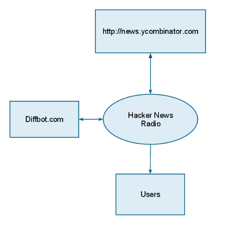
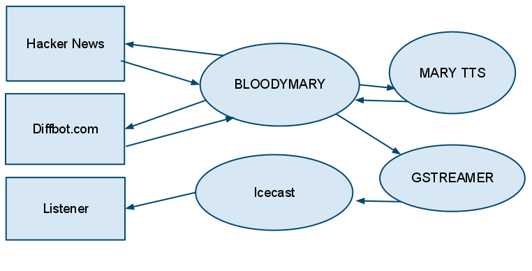

Hacker News Radio

@jeffsigmon - 6/22/2011
Presenter Notes
Overview
Presenter Notes
What is it?
A model for publishing audio streams from textual sources on the web.
More Specifically...
- A processor that scrapes news.ycombinator.com, converts text representation to synthesized speech and publishes audio streams.
- A website providing an embedded audio player and links to the published streams.

Presenter Notes
Demo
Presenter Notes
What software/services are used?
- Clojure is the glue binds it all
- MARY TTS is an open-source, multilingual Text-to-Speech Synthesis platform written in Java.
- gstreamer is an open source multimedia framework.
- gstreamer-java is a Java interface to the gstreamer framework.
- Icecast is free server software for streaming multimedia.
- Enlive is selector-based templating and transformation system for Clojure.
- HTML5 BOILERPLATE is the professional badass's base HTML/CSS/JS template for a fast, robust and future-proof site.
- pynch is a clojure library for scraping hacker news.
- Diffbot Article API will extract and clean article text from news article web pages.
- diffbot-clj Clojure client for Diffbot.
- linode.com is a linux vps hosting provider.
- tunein.com gives you access to over 50,000 of the world's radio stations so you can find and listen to unlimited music, sports and talk radio.
Presenter Notes
Context

Presenter Notes
Data Flow Level 1

Presenter Notes
Parsing Hacker News
Presenter Notes
Pynch
A clojure library to scrape/parse submission from hacker news.
Get the most recent submission
1 (-> "http://news.ycombinator.com" java.net.URI. get-subs first)
2
3 ;;;output
4
5 {:points 120,
6 :title "F.B.I. Seizes Web Servers, Knocking Sites Offline ",
7 :sub-time #<DateTime 2011-06-22T00:08:00.000Z>,
8 :sub-url "http://bits.blogs.nytimes.com/2011/06/21/f-b-i-seizes-web-servers-knocking-sites-offline/",
9 :user "tshtf",
10 :com-url "item?id=2680922",
11 :com-count 66}
Presenter Notes
Get submission details
1 (-> "http://news.ycombinator.com/item?id=2681410"
2 java.net.URI. get-sub-details)
3
4 ;;;output
5
6 ({:title "Brendan Eich: New JavaScript Engine Module Owner",
7 :time #<DateTime 2011-06-22T03:17:00.000Z>,
8 :points 20,
9 :user "pufuwozu",
10 :notes "\n",
11 :com-url "item?id=2681410",
12 :com-count 2,
13 :comments
14 ({:user "keyle",
15 :time #<DateTime 2011-06-22T03:17:00.000Z>,
16 :cmnt-url "item?id=2681497",
17 :cmnt-text
18 ("Is that likely to have a significant impact on the way we write Javascript today?")}
19 {:user "wmf",
20 :time #<DateTime 2011-06-22T03:24:00.000Z>,
21 :cmnt-url "item?id=2681560",
22 :cmnt-text
23 ("No. JavaScript is (now) important enough that no one person has that much influence over it.")})})
Presenter Notes
Enlive
Enlive is an extraction and transformation library for HTML and XML documents written in Clojure. It uses CSS-like selectors.
Usual Enlive applications include templating and screenscraping.
Here is a very simple example to retreive list of submission titles on hacker news
1 (map #(enlv/text %)
2 (enlv/select
3 (-> "http://news.ycombinator.com" java.net.URI. enlv/html-resource)
4 [:td.title :a]))
5
6 ("Revolutionary \"Light Field\" camera tech - shoot-first, focus-later"
7 "F.B.I. Seizes Web Servers, Knocking Sites Offline "
8 "Please, make yourself uncomfortable"
9 "Pinboard.in service limited - FBI raided hosting company and pulled equpiment"
10 "Brendan Eich: New JavaScript Engine Module Owner"
11 "Comparing Indian states with countries"
12 "Impressions of Android from a dev's perspective"
13 "Firefox 5 is now officially released"
14 "5 Months of Customer Service Hell with HTC"
15 "Sony officially 50% of all GitHub's DMCA notices ")
Presenter Notes
Select list of titles and submitters
1 (enlv/let-select
2 (-> "http://news.ycombinator.com" java.net.URI. enlv/html-resource)
3 [titles [:td.title :a]
4 users [[:a (enlv/attr-starts :href "user")]]]
5 (map #(hash-map :title (enlv/text %1) (enlv/text %2) titles users)))
6
7 ;;; OUTPUT
8
9 (({:title "Revolutionary \"Light Field\" camera tech - shoot-first, focus-later",
10 :user "hugorodgerbrown"}
11 {:title "F.B.I. Seizes Web Servers, Knocking Sites Offline ",
12 :user "tshtf"}
13 {:title "Please, make yourself uncomfortable",
14 :user "buf"}
15 {:title "Pinboard.in service limited - FBI raided hosting company and pulled equpiment",
16 :user "rograndom"}
17 {:title "Brendan Eich: New JavaScript Engine Module Owner",
18 :user "pufuwozu"}
19 {:title "Comparing Indian states with countries",
20 :user "gopi"}))
Presenter Notes
Diffbot
Diffbot Article API
The Article API takes in as input any news story page. Statistical machine learning algorithms are run over all of the visual elements on the page to extract out the article text and associated metadata, such as its images, videos, and tags. If the article spans multiple pages, Diffbot will follow the next pages to get the whole article. There is also experimental support for extracting reader comments.
Using diffbot-clj
1 (analyze
2 "http://brendaneich.com/2011/06/new-javascript-engine-module-owner/"
3 *token*)
4
5 ;;; OUTPUT
6
7 {:icon "http://brendaneich.com/favicon.ico",
8 :author "Bill Joy",
9 :text "As you may know, I wrote JavaScript in ten days.... (SHORTENDED BY JEFF FOR THIS PRESENTATION)"
10 :title "New JavaScript Engine Module Owner",
11 :date "21 June 2011",
12 :url "http://brendaneich.com/2011/06/new-javascript-engine-module-owner/",
13 :xpath "/HTML[1]/BODY[1]/DIV[1]/DIV[2]/DIV[1]/DIV[1]/DIV[3]"}
Presenter Notes
Speech Synthesis
Presenter Notes
Mary TTS
MARY is an open-source, multilingual Text-to-Speech Synthesis platform written in Java. It was originally developed as a collaborative project of DFKI's Language Technology lab and the Institute of Phonetics at Saarland University and is now being maintained by DFKI.
As of version 4.3, MARY TTS supports German, British and American English, Telugu, Turkish, and Russian; more languages are in preparation. MARY TTS comes with toolkits for quickly adding support for new languages and for building unit selection and HMM-based synthesis voices.
Key Components
- Multi-threaded server
- Java Client
- Built in voices
Presenter Notes
Input
Plain Text
Sable
SABLE is an XML markup language used to annotate texts for speech synthesis. It defines tags which control the way words, numbers, and sentences are reproduced by a computer. SABLE was developed as an informal joint project between Sun Microsystems, AT&T, Bell Labs and Edinburgh University (the initial letters of each make the word "SABLE") as an initiative to combine the three previous speech synthesis markup languages SSML, STML, and JSML.
Speech Synthesis Markup Language (SSML)
Speech Synthesis Markup Language (SSML) is an XML-based markup language for speech synthesis applications. It is a recommendation of the W3C's voice browser working group. SSML is often embedded in VoiceXML scripts to drive interactive telephony systems. However, it also may be used alone, such as for creating audio books. For desktop applications, other markup languages are popular, including Apple's embedded speech commands, and Microsoft's SAPI Text to speech (TTS) markup, also an XML language.
Mary XML
MaryXML is an internal, relatively low-level markup which reflects the modelling capabilities of this particular TtS system.
Presenter Notes
Example SSML
1 <?xml version="1.0"?>
2 <speak xmlns="http://www.w3.org/2001/10/synthesis"
3 xmlns:dc="http://purl.org/dc/elements/1.1/"
4 version="1.0">
5 <metadata>
6 <dc:title xml:lang="en">Telephone Menu: Level 1</dc:title>
7 </metadata>
8 <p>
9 <s xml:lang="en-US">
10 <voice name="David" gender="male" age="25">
11 For English, press <emphasis>one</emphasis>.
12 </voice>
13 </s>
14 <s xml:lang="es-MX">
15 <voice name="Miguel" gender="male" age="25">
16 Para español, oprima el <emphasis>dos</emphasis>.
17 </voice>
18 </s>
19 </p>
20 </speak>
Presenter Notes
API Usage
1 (ns bloodymary.mary
2 (:import
3 (marytts.client.http Address)
4 (java.io ByteArrayInputStream ByteArrayOutputStream)))
5
6 (def *host* "localhost")
7 (def *port* 59125)
8 (def *input-type* "TEXT")
9 (def *audio-type* "AU")
10 (def *locale* "en_GB")
11 (def *voice-name* "dfki-spike-hsmm")
12 (def *style* "")
13 (def *effects* "")
14
15 (defn get-audio [s & options]
16 (let [stream (ByteArrayOutputStream.)
17 opts (apply hash-map options)
18 client (get-client (get opts :host *host*) (get opts :port *port*))]
19 (.process
20 client s
21 (get opts :input-type *input-type*)
22 "AUDIO"
23 (get opts :locale *locale*)
24 (get opts :audio-type *audio-type*)
25 (get opts :voice-name *voice-name*)
26 stream)
27 (.toByteArray stream)))
Presenter Notes
Demo
Presenter Notes
gstreamer
Presenter Notes
What is it?
gstreamer is a framework for creating streaming media applications.
The fundamental design comes from the video pipeline at Oregon Graduate Institute, as well as some ideas from DirectShow.
Specifically
- API for multimedia applications
- Plugin architecture
- Pipeline architecture
- Mechanism for media type handling/negotiation
- Over 150 plug-ins
- A set of tools
Presenter Notes
Context

Presenter Notes
Core Concepts
- Element
- Pad
- Bin
- Pipeline
- Bus
Presenter Notes
Data Flow

Presenter Notes
Packages
- gstreamer contains the core library and elements
- gst-plugins-base contains an essential exemplary set of elements
- gst-plugins-good contains a set of good-quality plug-ins under our preferred license, LGPL
- gst-plugins-ugly contains a set of good-quality plug-ins that might pose distribution problems
- gst-plugins-gl contains plug-in and helper libraries for OpenGL integration
- gst-ffmpeg contains FFmpeg based plugin
- tools contains gst-launch, gst-inspect, gst-typefind, gst-feedback
Presenter Notes
Key Elements for HNR
- appsrc
- auparse
- audioconvert
- tee
- lamemp3enc
- queue
- audioresample
- capsfilter
- shout2send
- vorbisend
- audiorate
- oggmux
Presenter Notes
HNR Pipeline

Presenter Notes
Demo
Presenter Notes
Icecast
Presenter Notes
About
Icecast is a streaming media server which currently supports Ogg Vorbis and MP3 audio streams. It can be used to create an Internet radio station or a privately running jukebox and many things in between. It is very versatile in that new formats can be added relatively easily and supports open standards for commuincation and interaction.
There are two major parts to most streaming media servers: the component providing the content (what we call source clients) and the component which is responsible for serving that content to listeners (this is the function of icecast).
Presenter Notes
Concepts
A source client is an external program which is responsible for sending content data to icecast. Some source clients that support icecast2 are Oddcast, ices2, ices0.3, and DarkIce.
The slave server in a relay configuration is the server that is pulling the data from the master server. It acts as a listening client to the master server.
The master server in a relay configuration is the server that has the stream that is being relayed.
A mountpoint is a resource on the icecast server that represents a single broadcast stream. Mountpoints are named similar to files (/mystream.ogg, /mymp3stream). When listeners connect to icecast2, they must specify the mountpoint in the request (i.e. http://192.168.1.10:8000/mystream.ogg). Additionally, source clients must specify a mountpoint when they connect as well. Statistics are kept track of by mountpoint. Mountpoints are a fundamental aspect of icecast2 and how it is organized.
Presenter Notes
Mountpoints
Each icecast server can house multiple broadcasts (or mountpoints) each containing a separate stream of content. A 'mountpoint' is a unique name on your server identifying a particular stream - it looks like a filename, such as '/stream.ogg'. A listener can only listen to a single mountpoint at a time. This means you can have a single icecast server contain either multiple broadcasts with different content, or possibly the same broadcast but with streams of different bitrates or qualities. In this case each broadcast or stream is a separate mountpoint.
- Static
- Dynamic
Presenter Notes
Configuration
- Concurrent Clients
- Sources
- Timeouts
- Authentication
- Relay
- etc
Presenter Notes
Admin interface
Through this interface the user can manipulate many server features. From it you can gather statistics, move listeners from mountpoint to mountpoint, disconnect connected sources, disconnect connected listeners, and many other activities.
Relying
Relaying is the process by which one server mirrors one or more streams from a remote server. The servers need not be of the same type (i.e. icecast can relay from Shoutcast). Relaying is used primarily for large broadcasts that need to distribute listening clients across multiple physical machines.
Type of Relays
There are two types of relays that icecast supports. The first type is when both master and slave servers are icecast2 servers. In this case, a "master-slave" relay can be setup such that all that needs to be done is configure the slave server with the connection information (serverip:port) of the master server and the slave will mirror all mountpoints on the master server. The slave will also periodically check the master server to see if any new mountpoints have attached and if so will relay those as well. The second type of relay is a "single-broadcast" relay. In this case, the slave server is configured with a serverip+port+mount and only the mountpoint specified is relayed. In order to relay a broadcast stream on a Shoutcast server, you must use the "single-broadcast" relay and specify a mountpoint of "/".
Presenter Notes
Yellow Pages
A YP (Yellow Pages) directory is a listing of broadcast streams. Icecast2 has it own YP directory located at http://dir.xiph.org. Currently icecast2 can only be listed in an icecast2-supported YP directory. This means that you cannot list your stream in the Shoutcast YP directory.
In the icecast2 configuration file are all the currently available YP directory servers. Listing your stream in a YP is a combination of settings in the icecast configuration file and also in your source client.
Presenter Notes
Listener Authentication
Listener authentication is a feature of icecast which allows you to secure a certain mountpoint such that in order to listen, a listener must pass some verification test. With this feature, a simple pay-for-play operation (eg user/pass), or some filtering based on the listener connection can be performed. This section will show you the basics of setting up and maintaining this component.
To define listener authentication, a group of tags are specified in
the